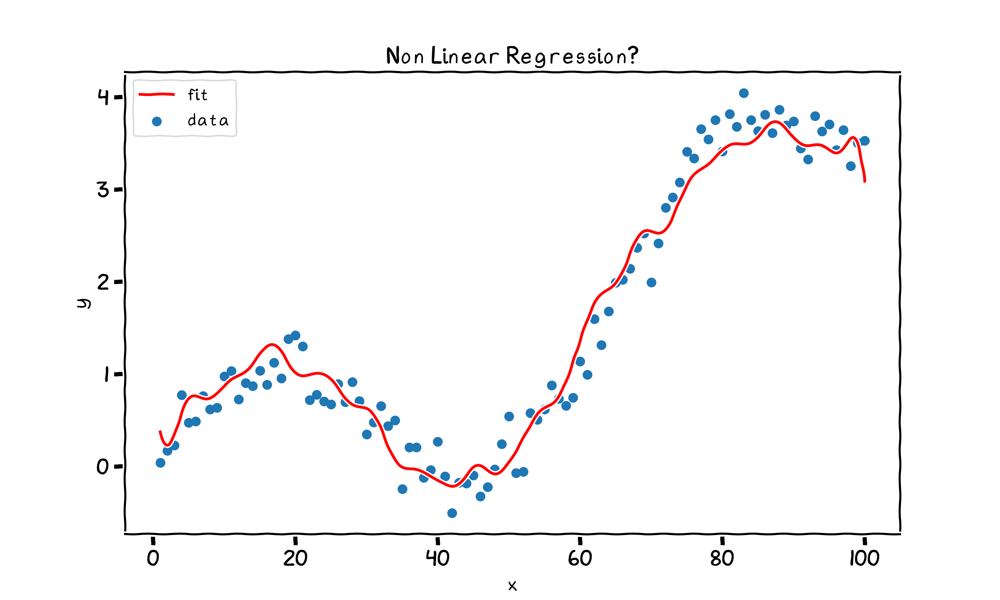

layout: true <div class="my-header"> <p class="align_left"><img src="images/yonsei_logo.png" style="height: 30px;"/></p> <p class="align_right"><b>Linear Regression 2</b></p> </div> <div class="my-footer"> <p class="align_right"><b>2021.04.30 ML Study</b></p> <p class="align_left"><b>Tae Geun Kim</b></p> </div> --- class: center, middle # Linear Regression <h4 style="color:brown">Part II: Implementations</h4> <h3 style="color: darkblue">Tae Geun Kim</h3> --- ## Table of Contents -- * F-test -- * Implementation -- * Gauss-Markov Theorem Revisited -- * Regression by Successive Orthogonalization -- * Multiple Outputs -- * Reduce Variance -- * Subset Selection -- * Ridge -- * The Lasso --- class: center, middle # F-test --- ### F-test * To test validity of one feature -- `\(\rightarrow\)` **t-test** or **z-test** -- * To test which model is more valid -- `\(\rightarrow\)` **F-test** -- * Suppose there are two models : `\(\small p=p_0,~p=p_1\quad(p_0 < p_1)\)` -- Then the null hypothesis & alternative hypothesis are : $$\small H\_0: ~\beta\_{p\_0+1} = \beta\_{p\_0 + 2} = \cdots = \beta\_{p\_1} = 0,\quad H\_1: \text{ Not } H\_0$$ -- Then the F statistics is : $$F = \frac{(\text{RSS}\_0 - \text{RSS}\_1) / (p\_1 - p_0)}{\text{RSS}\_1 / (N-p\_1 - 1)}$$ --- ### F-test <div class="animated-border-quote"> <blockquote> <p> $$\small \begin{align} \text{RSS}_0 - \text{RSS}_1 &= \sum_{i=1}^N \{ (y_i - \hat{y}_i^{(0)})^2 - (y_i-\hat{y}_i^{(1)})^2\} \\ &= \mathbf{y}^T (\mathbf{I} - \mathbf{H}^{(0)} - \mathbf{I} + \mathbf{H}^{(1)}) \mathbf{y} \\ &= \mathbf{y}^T (\mathbf{H}^{(1)} - \mathbf{H}^{(0)}) \mathbf{y} \end{align}$$ Since, \(\small \mathbf{H}^{(1)} - \mathbf{H}^{(0)}\) is also symmetric & idempotent, the degree of freedom is : $$\small \text{tr}(\mathbf{H}^{(0)} - \mathbf{H}^{(1)}) = p_1+1 - (p_0+1) = p_1 - p_0$$ \(\small \Rightarrow (\text{RSS}_0 - \text{RSS}_1) / (p_1 - p_0) \sim \sigma^2 \chi^2_{p_1-p_0}\), \(\small \,\text{RSS}_1 / ({N-p_1-1}) \sim \sigma^2 \chi^2_{N-p_1-1}\) <br/> <br/> \(\small \displaystyle \Rightarrow \frac{(\text{RSS}_0 - \text{RSS}_1) / (p_1 - p_0)}{\text{RSS}_1 / (N-p_1 - 1)} \,\sim\, \frac{\sigma^2\chi^2_{p_1 - p_0}}{\sigma^2 \chi^2_{N-p_1-1}} \,\sim\, F_{p_1-p_0,\,N-p_1-1}\) </p> </blockquote> </div> --- class: center, middle # Implementation --- ### Raw Code for Estimation ```python import numpy as np import statsmodels.api as sm def find_beta_hat(X, y): # X should be np.matrix return np.linalg.pinv(X) * y def find_y_hat(X, beta, y): return X * beta # Example np.random.seed(42) x = np.arange(1, 5, 0.1) err = np.random.randn(len(x)) y = 2 * x + 3 + err X = np.matrix(x).T X = sm.add_constant(X) Y = np.matrix(y).T beta = find_beta_hat(X, Y) y_hat = find_y_hat(X, beta, Y) ``` --- ### Raw Code for test ```python def find_sigma_hat(y, y_hat, p): return np.sum((y - y_hat)**2) / (len(y) - p - 1) def calc_t_score(beta, X, sigma): v = np.sqrt(np.diag(np.linalg.inv(X.T * X))) return (beta / v) / np.sqrt(sigma) def calc_rss(y, y_hat): return np.sum((y - y_hat)**2) def calc_F_score(rss_0, p_0, rss_1, p_1, N): return ((rss_0 - rss_1) / (p_1 - p_0)) / (rss_1 / (N - p_1 - 1)) def calc_p_value(d, z): return (1 - d.cdf(z)) * 2 ``` -- * But it's too dirty... -- `\(\,\Rightarrow\,\)` Use OOP --- ### OOP Implementations of OLS * View [Code]() --- class: split-30 ### Is this plot linear regression? .right-column[ <div id="boxshadow" style="width:100%">  <figcaption style="text-align: center;"><b>Fig.2</b> Non-Linear Regression...?</figcaption> </div> ] --- ### Example : Prostate cancer <iframe src="https://nbviewer.jupyter.org/github/Axect/ESL_Study/blob/master/chap3/python/prostate.ipynb" style="width:100%;height:500px"></iframe> --- ### References * T. Hastie et al., *The Elements of Statistical Learning 2nd ed*, Springer (2009) * Gujarati, D. N., and Porter, D. C., *Basic Econometrics 5th ed*, McGraw Hill (2009) * P. Das., *Econometrics in Theory and Practice*, Springer (2019) * C. M. Bishop., *Pattern Recognition and Machine Learning*, Springer (2006) --- class: center, middle # Thank you!